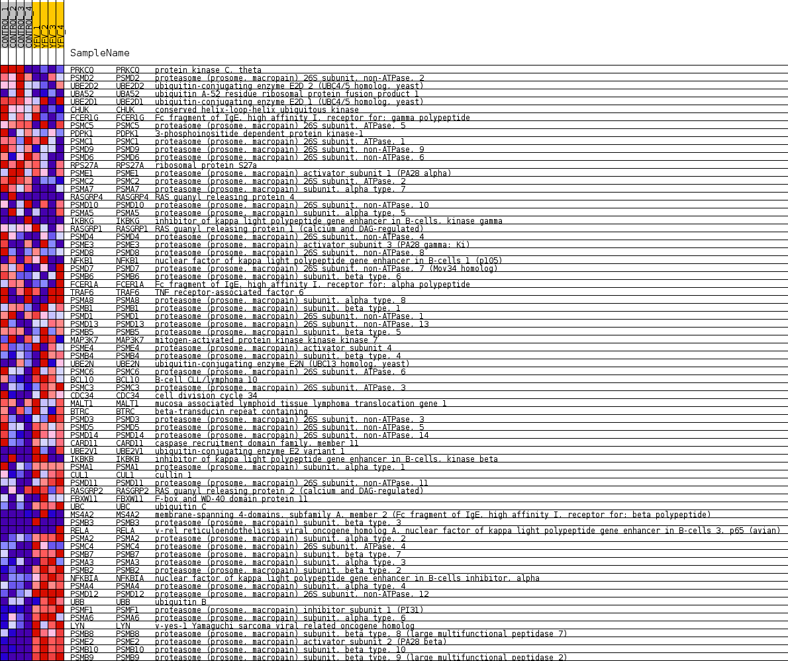
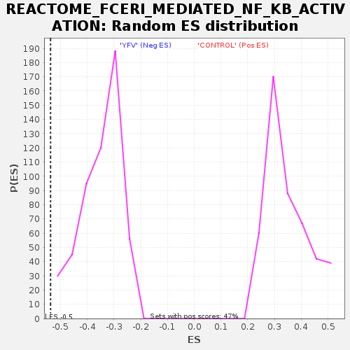

Profile of the Running ES Score & Positions of GeneSet Members on the Rank Ordered List
| Dataset | MATRIZ_GSE99081_collapsed_to_symbols.gsea_CLASE_99081.cls#CONTROL_versus_YFV |
| Phenotype | gsea_CLASE_99081.cls#CONTROL_versus_YFV |
| Upregulated in class | YFV |
| GeneSet | REACTOME_FCERI_MEDIATED_NF_KB_ACTIVATION |
| Enrichment Score (ES) | -0.5372935 |
| Normalized Enrichment Score (NES) | -1.5492523 |
| Nominal p-value | 0.0 |
| FDR q-value | 0.10102471 |
| FWER p-Value | 0.989 |
| SYMBOL | TITLE | RANK IN GENE LIST | RANK METRIC SCORE | RUNNING ES | CORE ENRICHMENT | |
|---|---|---|---|---|---|---|
| 1 | PRKCQ | protein kinase C, theta | 145 | 1.174 | 0.0267 | No |
| 2 | PSMD2 | proteasome (prosome, macropain) 26S subunit, non-ATPase, 2 | 711 | 0.738 | 0.0142 | No |
| 3 | UBE2D2 | ubiquitin-conjugating enzyme E2D 2 (UBC4/5 homolog, yeast) | 1041 | 0.634 | 0.0132 | No |
| 4 | UBA52 | ubiquitin A-52 residue ribosomal protein fusion product 1 | 1969 | 0.488 | -0.0293 | No |
| 5 | UBE2D1 | ubiquitin-conjugating enzyme E2D 1 (UBC4/5 homolog, yeast) | 2350 | 0.433 | -0.0397 | No |
| 6 | CHUK | conserved helix-loop-helix ubiquitous kinase | 2761 | 0.373 | -0.0537 | No |
| 7 | FCER1G | Fc fragment of IgE, high affinity I, receptor for; gamma polypeptide | 3022 | 0.339 | -0.0595 | No |
| 8 | PSMC5 | proteasome (prosome, macropain) 26S subunit, ATPase, 5 | 3127 | 0.329 | -0.0559 | No |
| 9 | PDPK1 | 3-phosphoinositide dependent protein kinase-1 | 3635 | 0.275 | -0.0789 | No |
| 10 | PSMC1 | proteasome (prosome, macropain) 26S subunit, ATPase, 1 | 3697 | 0.267 | -0.0746 | No |
| 11 | PSMD9 | proteasome (prosome, macropain) 26S subunit, non-ATPase, 9 | 3732 | 0.263 | -0.0687 | No |
| 12 | PSMD6 | proteasome (prosome, macropain) 26S subunit, non-ATPase, 6 | 3986 | 0.243 | -0.0769 | No |
| 13 | RPS27A | ribosomal protein S27a | 4134 | 0.232 | -0.0789 | No |
| 14 | PSME1 | proteasome (prosome, macropain) activator subunit 1 (PA28 alpha) | 4391 | 0.212 | -0.0883 | No |
| 15 | PSMC2 | proteasome (prosome, macropain) 26S subunit, ATPase, 2 | 4826 | 0.173 | -0.1099 | No |
| 16 | PSMA7 | proteasome (prosome, macropain) subunit, alpha type, 7 | 5238 | 0.134 | -0.1313 | No |
| 17 | RASGRP4 | RAS guanyl releasing protein 4 | 5321 | 0.128 | -0.1324 | No |
| 18 | PSMD10 | proteasome (prosome, macropain) 26S subunit, non-ATPase, 10 | 5332 | 0.127 | -0.1292 | No |
| 19 | PSMA5 | proteasome (prosome, macropain) subunit, alpha type, 5 | 5659 | 0.102 | -0.1462 | No |
| 20 | IKBKG | inhibitor of kappa light polypeptide gene enhancer in B-cells, kinase gamma | 5852 | 0.088 | -0.1555 | No |
| 21 | RASGRP1 | RAS guanyl releasing protein 1 (calcium and DAG-regulated) | 6169 | 0.063 | -0.1731 | No |
| 22 | PSMD4 | proteasome (prosome, macropain) 26S subunit, non-ATPase, 4 | 6348 | 0.049 | -0.1826 | No |
| 23 | PSME3 | proteasome (prosome, macropain) activator subunit 3 (PA28 gamma; Ki) | 6661 | 0.029 | -0.2010 | No |
| 24 | PSMD8 | proteasome (prosome, macropain) 26S subunit, non-ATPase, 8 | 6710 | 0.026 | -0.2032 | No |
| 25 | NFKB1 | nuclear factor of kappa light polypeptide gene enhancer in B-cells 1 (p105) | 6780 | 0.022 | -0.2068 | No |
| 26 | PSMD7 | proteasome (prosome, macropain) 26S subunit, non-ATPase, 7 (Mov34 homolog) | 6854 | 0.018 | -0.2108 | No |
| 27 | PSMB6 | proteasome (prosome, macropain) subunit, beta type, 6 | 7048 | 0.008 | -0.2225 | No |
| 28 | FCER1A | Fc fragment of IgE, high affinity I, receptor for; alpha polypeptide | 7151 | 0.003 | -0.2287 | No |
| 29 | TRAF6 | TNF receptor-associated factor 6 | 9581 | -0.007 | -0.3788 | No |
| 30 | PSMA8 | proteasome (prosome, macropain) subunit, alpha type, 8 | 9584 | -0.007 | -0.3787 | No |
| 31 | PSMB1 | proteasome (prosome, macropain) subunit, beta type, 1 | 9745 | -0.014 | -0.3882 | No |
| 32 | PSMD1 | proteasome (prosome, macropain) 26S subunit, non-ATPase, 1 | 10102 | -0.030 | -0.4093 | No |
| 33 | PSMD13 | proteasome (prosome, macropain) 26S subunit, non-ATPase, 13 | 10422 | -0.053 | -0.4274 | No |
| 34 | PSMB5 | proteasome (prosome, macropain) subunit, beta type, 5 | 10473 | -0.058 | -0.4287 | No |
| 35 | MAP3K7 | mitogen-activated protein kinase kinase kinase 7 | 10616 | -0.068 | -0.4354 | No |
| 36 | PSME4 | proteasome (prosome, macropain) activator subunit 4 | 10799 | -0.085 | -0.4441 | No |
| 37 | PSMB4 | proteasome (prosome, macropain) subunit, beta type, 4 | 10839 | -0.088 | -0.4438 | No |
| 38 | UBE2N | ubiquitin-conjugating enzyme E2N (UBC13 homolog, yeast) | 10897 | -0.094 | -0.4445 | No |
| 39 | PSMC6 | proteasome (prosome, macropain) 26S subunit, ATPase, 6 | 11010 | -0.102 | -0.4483 | No |
| 40 | BCL10 | B-cell CLL/lymphoma 10 | 11344 | -0.133 | -0.4649 | No |
| 41 | PSMC3 | proteasome (prosome, macropain) 26S subunit, ATPase, 3 | 11528 | -0.149 | -0.4717 | No |
| 42 | CDC34 | cell division cycle 34 | 11713 | -0.165 | -0.4780 | No |
| 43 | MALT1 | mucosa associated lymphoid tissue lymphoma translocation gene 1 | 11747 | -0.169 | -0.4749 | No |
| 44 | BTRC | beta-transducin repeat containing | 11766 | -0.171 | -0.4709 | No |
| 45 | PSMD3 | proteasome (prosome, macropain) 26S subunit, non-ATPase, 3 | 11846 | -0.178 | -0.4703 | No |
| 46 | PSMD5 | proteasome (prosome, macropain) 26S subunit, non-ATPase, 5 | 11911 | -0.185 | -0.4687 | No |
| 47 | PSMD14 | proteasome (prosome, macropain) 26S subunit, non-ATPase, 14 | 11924 | -0.186 | -0.4637 | No |
| 48 | CARD11 | caspase recruitment domain family, member 11 | 12109 | -0.204 | -0.4689 | No |
| 49 | UBE2V1 | ubiquitin-conjugating enzyme E2 variant 1 | 12528 | -0.248 | -0.4872 | No |
| 50 | IKBKB | inhibitor of kappa light polypeptide gene enhancer in B-cells, kinase beta | 12590 | -0.253 | -0.4833 | No |
| 51 | PSMA1 | proteasome (prosome, macropain) subunit, alpha type, 1 | 12891 | -0.287 | -0.4931 | No |
| 52 | CUL1 | cullin 1 | 12992 | -0.300 | -0.4902 | No |
| 53 | PSMD11 | proteasome (prosome, macropain) 26S subunit, non-ATPase, 11 | 13564 | -0.374 | -0.5142 | No |
| 54 | RASGRP2 | RAS guanyl releasing protein 2 (calcium and DAG-regulated) | 13939 | -0.430 | -0.5242 | Yes |
| 55 | FBXW11 | F-box and WD-40 domain protein 11 | 14011 | -0.443 | -0.5151 | Yes |
| 56 | UBC | ubiquitin C | 14182 | -0.479 | -0.5111 | Yes |
| 57 | MS4A2 | membrane-spanning 4-domains, subfamily A, member 2 (Fc fragment of IgE, high affinity I, receptor for; beta polypeptide) | 14238 | -0.490 | -0.4996 | Yes |
| 58 | PSMB3 | proteasome (prosome, macropain) subunit, beta type, 3 | 14438 | -0.500 | -0.4967 | Yes |
| 59 | RELA | v-rel reticuloendotheliosis viral oncogene homolog A, nuclear factor of kappa light polypeptide gene enhancer in B-cells 3, p65 (avian) | 14524 | -0.501 | -0.4867 | Yes |
| 60 | PSMA2 | proteasome (prosome, macropain) subunit, alpha type, 2 | 14672 | -0.535 | -0.4795 | Yes |
| 61 | PSMC4 | proteasome (prosome, macropain) 26S subunit, ATPase, 4 | 14766 | -0.557 | -0.4683 | Yes |
| 62 | PSMB7 | proteasome (prosome, macropain) subunit, beta type, 7 | 14794 | -0.565 | -0.4528 | Yes |
| 63 | PSMA3 | proteasome (prosome, macropain) subunit, alpha type, 3 | 14958 | -0.609 | -0.4444 | Yes |
| 64 | PSMB2 | proteasome (prosome, macropain) subunit, beta type, 2 | 15120 | -0.662 | -0.4342 | Yes |
| 65 | NFKBIA | nuclear factor of kappa light polypeptide gene enhancer in B-cells inhibitor, alpha | 15212 | -0.696 | -0.4186 | Yes |
| 66 | PSMA4 | proteasome (prosome, macropain) subunit, alpha type, 4 | 15508 | -0.833 | -0.4115 | Yes |
| 67 | PSMD12 | proteasome (prosome, macropain) 26S subunit, non-ATPase, 12 | 15525 | -0.844 | -0.3869 | Yes |
| 68 | UBB | ubiquitin B | 15642 | -0.918 | -0.3661 | Yes |
| 69 | PSMF1 | proteasome (prosome, macropain) inhibitor subunit 1 (PI31) | 15701 | -0.986 | -0.3397 | Yes |
| 70 | PSMA6 | proteasome (prosome, macropain) subunit, alpha type, 6 | 15762 | -1.053 | -0.3114 | Yes |
| 71 | LYN | v-yes-1 Yamaguchi sarcoma viral related oncogene homolog | 15921 | -1.332 | -0.2807 | Yes |
| 72 | PSMB8 | proteasome (prosome, macropain) subunit, beta type, 8 (large multifunctional peptidase 7) | 16014 | -1.655 | -0.2360 | Yes |
| 73 | PSME2 | proteasome (prosome, macropain) activator subunit 2 (PA28 beta) | 16061 | -1.905 | -0.1810 | Yes |
| 74 | PSMB10 | proteasome (prosome, macropain) subunit, beta type, 10 | 16150 | -2.694 | -0.1045 | Yes |
| 75 | PSMB9 | proteasome (prosome, macropain) subunit, beta type, 9 (large multifunctional peptidase 2) | 16195 | -3.614 | 0.0027 | Yes |

